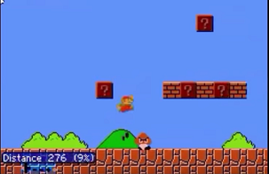
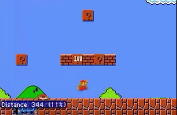
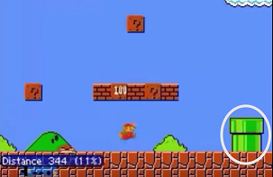
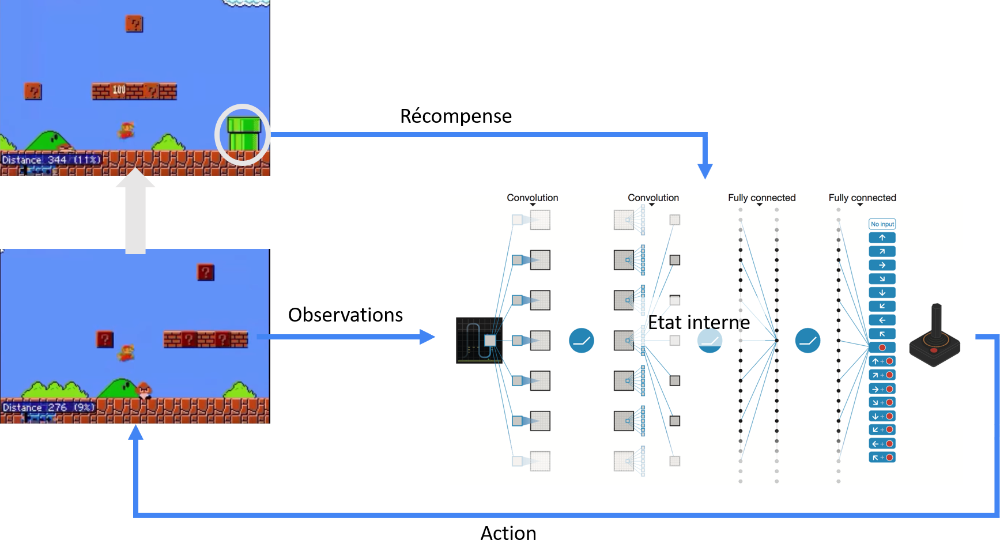
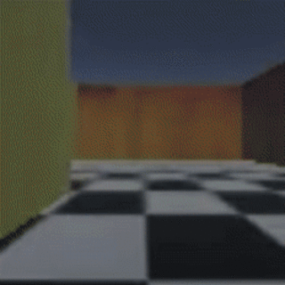

Pour faire face aux deux principales limites de l'apprentissage par renforcement : le manque de récompenses et les récompenses extrinsèques, on peut définir un autre modèle de récompense : la curiosité. Il s'agit d'un modèle basé sur l'exemple de la personne flâneuse, c'est-à-dire de la personne qui reçoit peu de récompenses au quotidien si ce n'est des récompenses intrinsèques.
On définit alors la récompense comme l'erreur de prédiction de l'état suivant. L'agent cherche en effet à prédire l'état suivant de l'environnement en connaissant l'état actuel et les actions menées. Plus il se trompe, c'est-à-dire plus il est surpris par ce qu'il découvre, plus il sera récompensé !
Reprenons l'exemple de Mario Bros, l'agent perçoit l'état décrit dans l'image suivante et prend une décision en fonction de celui-ci. Suite à cette décision, il lui est demandé de prédire quel sera l'état suivant.

L'agent émet donc une prédiction et si celle-ci s'avère être erronée, il est récompensé. Ainsi dans le cas présent, l'agent n'a pas pu (et ne pouvait pas) prévoir qu'en avançant il apparaitrait un tuyau, il est donc récompensé.
| Prédiction | Réalité |
|---|---|
|  |  |
On aurait donc le schéma suivant :

On a donc quasiment le même schéma que précédemment mais cette fois-ci avec une politique de récompense bien mieux défini.
Voici une démonstration sur les jeux MarioBros et VizDoom.
Une étude plus approfondi de cet algorithme a conduit au résultat suivant :
Tout se passe très bien, l'agent joue à de très nombreux jeux variés et s'en sors très bien. Cependant, lorsque l'on place l'agent face à une télévision il reste bloqué. La curiosité a ici entrainé la paresse. En effet, l'agent a ici la possibilité de changer de chaine devant cette télévision, ce qui conduit à chaque fois à une grande récompense car le résultat n'est que très peu prédictible.
